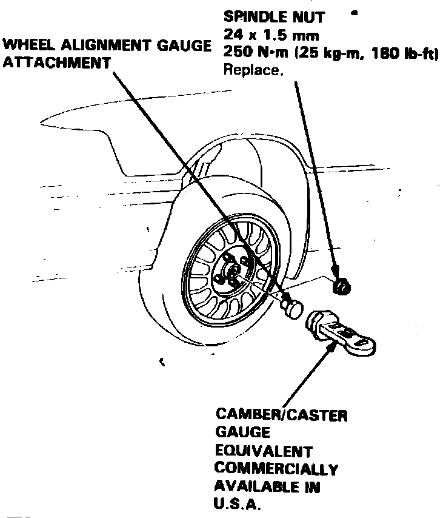
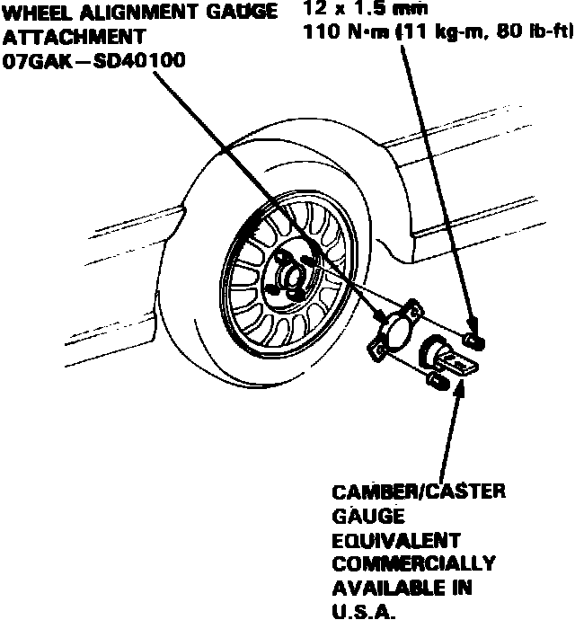

Caster
Front and rear camber angles are not adjustable, however, the following procedures may be used to ensure camber is within specifications. Ensure tires are properly inflated prior to checking camber angles.
Fig. 3 Camber angle check. Exc. Legend rear camber:

Front
1. Remove spindle nut and install suitable camber gauge and adapter, Fig. 3, with wheels in straight-ahead position.
2. Note gauge reading with bubble centered on the gauge. If camber is not within specifications, inspect suspension components for damage and repair as necessary, then recheck camber.
Fig. 4 Rear camber angle check. Legend:

Rear
1. Remove two lug nuts and install adapter and camber gauge on hub carrier, Fig. 4. Ensure adapter is installed parallel to hub carrier by using a depth gauge through the three holes in adapter.
2. Note gauge reading with bubble centered on the gauge. If camber is not within specifications, inspect suspension components for damage and repair as necessary, then recheck camber.